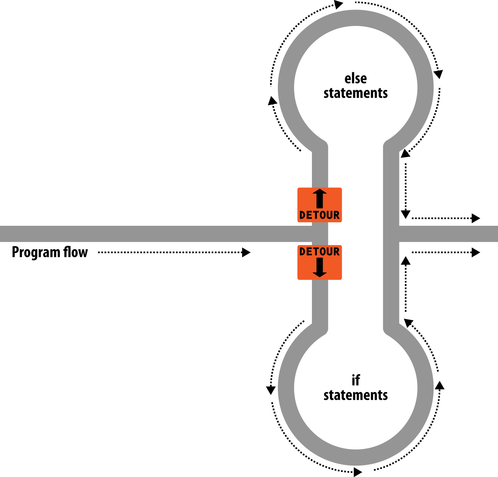
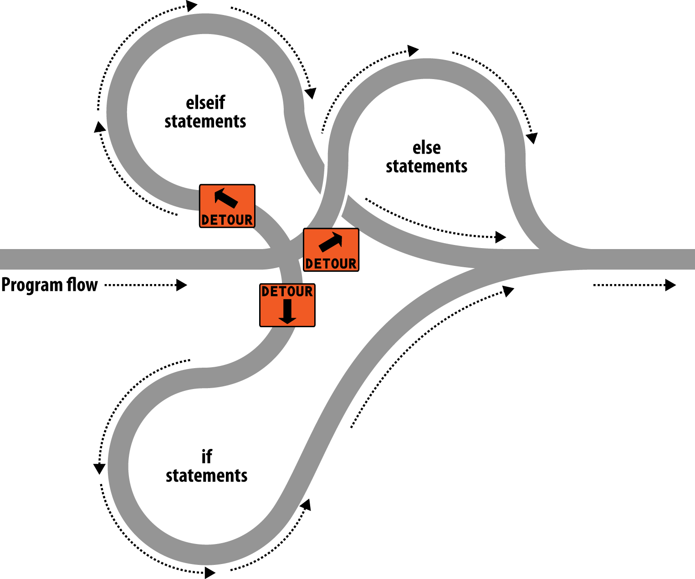
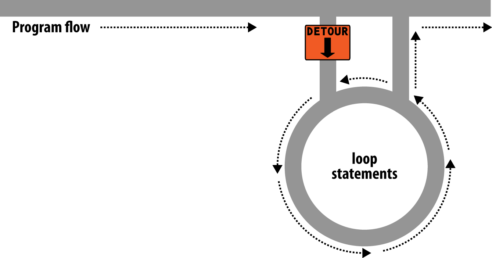
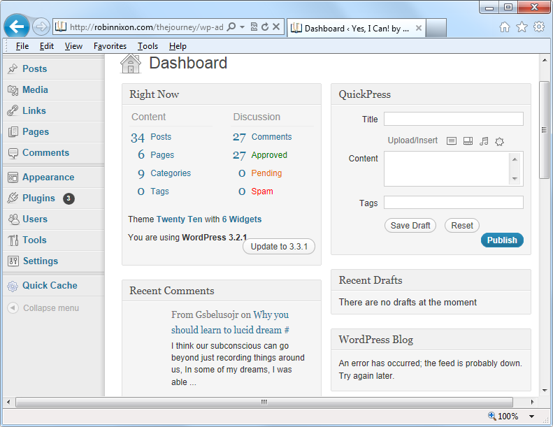

Expressions and Control Flow in PHP
The previous chapter introduced several topics in passing that this chapter covers
more fully, such as making choices (branching) and creating complex expressions. In
the previous chapter, I wanted to focus on the most basic syntax and operations in
PHP, but I couldn’t avoid touching on more-advanced topics. Now I can fill in the
background that you need to use these powerful PHP features properly.
In this chapter, you will get a thorough grounding in how PHP programming works
in practice and in how to control the flow of the program.
Expressions
Let’s start with the most fundamental part of any programming language:
expressions
.
An expression is a combination of values, variables, operators, and functions that
results in a value. It’s familiar to anyone who has taken high-school algebra:
y
= 3(abs(2
x
) + 4)
which in PHP would be
$y = 3 * (abs(2 * $x) + 4);
The value returned (
y
, or
$y
in this case) can be a number, a string, or a
Boolean value
(named after George Boole, a 19th-century English mathematician and philosopher).
By now, you should be familiar with the first two value types, but I’ll explain the
third.
TRUE or FALSE?
A basic Boolean value can be either
TRUE
or
FALSE
. For example, the expression
20 >
9
(20 is greater than 9) is
TRUE
, and the expression
5 == 6
(5 is equal to 6) is
FALSE
.
(You can combine Boolean operations using operators such as
AND
,
OR
, and
XOR
,
which are covered later in this chapter.)
Note that I am using uppercase letters for the names
TRUE
and
FALSE
. This is because they are predefined constants in PHP. You
can also use the lowercase versions, if you prefer, as they are also
predefined. In fact, the lowercase versions are more stable, because
PHP does not allow you to redefine them; the uppercase ones may
be redefined—something you should bear in mind if you import
third-party code.
Example 4-1
shows some simple expressions: the two I just mentioned, plus a couple
more. For each line, it prints out a letter between
a
and
d
, followed by a colon and the
result of the expressions. The
<br>
tag is there to create a line break and thus separate
the output into four lines in HTML.
Now that we are fully into the age of HTML5, and XHTML is no
longer being planned to supersede HTML, you do not need to use
the self-closing
<br />
form of the
<br>
tag, or any void elements
(ones without closing tags), because the
/
is now optional. There‐
fore, I have chosen to use the simpler style in this book. If you ever
made HTML nonvoid tags self-closing (such as
<div />
), they will
not work in HTML5 because the
/
will be ignored, and you will
need to replace them with (for example)
<div>
...
</div>
. However,
you must still use the
<br />
form of HTML syntax when using
XHTML.
Example 4-1. Four simple Boolean expressions
<?php
echo "a: [" . (20 > 9) . "]<br>";
echo "b: [" . (5 == 6) . "]<br>";
echo "c: [" . (1 == 0) . "]<br>";
echo "d: [" . (1 == 1) . "]<br>";
?>
The output from this code is as follows:
a: [1]
b: []
c: []
d: [1]
Notice that both expressions
a:
and
d:
evaluate to
TRUE
, which has a value of
1
. But
b:
and
c:
, which evaluate to
FALSE
, do not show any value, because in PHP the
constant
FALSE
is defined as
NULL
, or nothing. To verify this for yourself, you could
enter the code in
Example 4-2
.
Example 4-2. Outputting the values of TRUE and FALSE
<?php // test2.php
echo "a: [" . TRUE . "]<br>";
echo "b: [" . FALSE . "]<br>";
?>
that outputs the following:
a: [1]
b: []
By the way, in some languages
FALSE
may be defined as
0
or even
–
1
, so it’s worth
checking on its definition in each language.
Literals and Variables
The simplest form of an expression is a
literal
, which simply means something that
evaluates to itself, such as the number
73
or the string
"Hello"
. An expression could
also simply be a variable, which evaluates to the value that has been assigned to it.
They are both types of expressions, because they return a value.
Example 4-3
shows three literals and two variables, all of which return values, albeit
of different types.
Example 4-3. Literals and variables
<?php
$myname = "Brian";
$myage = 37;
echo "a: " . 73 . "<br>"; // Numeric literal
echo "b: " . "Hello" . "<br>"; // String literal
echo "c: " . FALSE . "<br>"; // Constant literal
echo "d: " . $myname . "<br>"; // String variable
echo "e: " . $myage . "<br>"; // Numeric variable
?>
And, as you’d expect, you see a return value from all of these with the exception of
c:
,
which evaluates to
FALSE
, returning nothing in the following output:
a: 73
b: Hello
c:
d: Brian
e: 37
In conjunction with operators, it’s possible to create more-complex expressions that
evaluate to useful results.
When you combine assignment or control-flow constructs with expressions, the
result is a
statement
.
Example 4-4
shows one of each. The first assigns the result of the
expression
366 - $day_number
to the variable
$days_to_new_year
, and the second
outputs a friendly message only if the expression
$days_to_new_year < 30
evaluates
to
TRUE
.
Example 4-4. An expression and a statement
<?php
$days_to_new_year = 366 - $day_number; // Expression
if ($days_to_new_year < 30)
{
echo "Not long now till new year"; // Statement
}
?>
Operators
PHP offers a lot of powerful operators that range from arithmetic, string, and logical
operators to assignment, comparison, and more (see
Table 4-1
).
Table 4-1. PHP operator types
| Operator |
Description |
Example |
| Arithmetic |
Basic mathematics |
$a + $b |
| Array |
Array union |
$a + $b |
| Assignment |
Assign values |
$a = $b + 23 |
| Bitwise |
Manipulate bits within bytes |
12 ^ 9 |
| Comparison |
Compare two values |
$a < $b |
| Execution |
Execute contents of back ticks |
`ls -al` |
| Increment/decrement |
Add or subtract 1 |
$a++ |
| Logical |
Boolean |
$a and $b |
| String |
Concatenation |
$a . $b |
Each operator takes a different number of operands:
•
Unary
operators, such as incrementing (
$a++
) or negation (
-$a
), which take a
single operand.
•
Binary
operators, which represent the bulk of PHP operators, including addition,
subtraction, multiplication, and division.
•
One
ternary
operator, which takes the form
? x : y
. It’s a terse, single-line
if
statement that chooses between two expressions, depending on the result of a
third one.
Operator Precedence
If all operators had the same precedence, they would be processed in the order in
which they are encountered. In fact, many operators do have the same precedence, so
let’s look at a few in
Example 4-5
.
Example 4-5.
Three equivalent expressions
1 + 2 + 3 - 4 + 5
2 - 4 + 5 + 3 + 1
5 + 2 - 4 + 1 + 3
Here you will see that although the numbers (and their preceding operators) have
been moved, the result of each expression is the value
7
, because the plus and minus
operators have the same precedence. We can try the same thing with multiplication
and division (see
Example 4-6
).
Example 4-6.
Three expressions that are also equivalent
1 * 2 * 3 / 4 * 5
2 / 4 * 5 * 3 * 1
5 * 2 / 4 * 1 * 3
Here the resulting value is always
7.5
. But things change when we mix operators with
different
precedencies in an expression, as in
Example 4-7
.
Example 4-7.
Three expressions using operators of mixed precedence
1 + 2 * 3 - 4 * 5
2 - 4 * 5 * 3 + 1
5 + 2 - 4 + 1 * 3
If there were no operator precedence, these three expressions would evaluate to
25
,
–
29
, and
12
, respectively. But because multiplication and division take precedence over
addition and subtraction, there are implied parentheses around these parts of the
expressions, which would look like
Example 4-8
if they were visible.
Example 4-8. Three expressions showing implied parentheses
1 + (2 * 3) - (4 * 5)
2 - (4 * 5 * 3) + 1
5 + 2 - 4 + (1 * 3)
Clearly, PHP must evaluate the subexpressions within parentheses first to derive the
semi-completed expressions in
Example 4-9
.
Example 4-9. After evaluating the subexpressions in parentheses
1 + (6) - (20)
2 - (60) + 1
5 + 2 - 4 + (3)
The final results of these expressions are
–
13
,
–
57
, and
6
, respectively (quite different
from the results of
25
,
–
29
, and
12
that we would have seen had there been no opera‐
tor precedence).
Of course, you can override the default operator precedence by inserting your own
parentheses and forcing the original results that we would have seen had there been
no operator precedence (see
Example 4-10
).
Example 4-10. Forcing
left-to-right evaluation
((1 + 2) * 3 - 4) * 5
(2 - 4) * 5 * 3 + 1
(5 + 2 - 4 + 1) * 3
With parentheses correctly inserted, we now see the values
25
,
–
29
, and
12
, respec‐
tively.
Table 4-2
lists PHP’s operators in order of prece dence from high to low.
Table 4-2. The precedence of PHP operators (high to low)
| Operator(s) |
Type |
| () |
Parentheses |
| ++ -- |
Increment/decrement |
| ! |
Logical |
| * / % |
Arithmetic |
| + - . |
Arithmetic and string |
| << >> |
Bitwise |
| < <= > >= <> |
Comparison |
| == != === !== |
Comparison |
| & |
Bitwise (and references) |
| ^ |
Bitwise |
| | |
Bitwise |
| && |
Logical |
| || |
Logical |
| ? : |
Ternary |
| = += -= *= /= .= %= &= != ^= <<= >>= |
Assignment |
| and |
Logical |
| xor |
Logical |
| or |
Logical |
Associativity
We’ve been looking at processing expressions from left to right, except where opera‐
tor precedence is in effect. But some operators require processing from right to left,
and this direction of processing is called the operator’s
associativity
. For some opera‐
tors, there is no associativity.
Associativity becomes important in cases in which you do not explicitly force prece‐
dence, so you need to be aware of the default actions of operators, as detailed in
Table 4-3
, which lists operators and their associativity.
Table 4-3. Operator associativity
| Operator |
Description |
Associativity |
| CLONE NEW |
Create a new object |
None |
| < <= >= == != === !== <> |
Comparison |
None |
| ! |
Logical NOT |
Right |
| ~ |
Bitwise NOT |
Right |
| ++ -- |
Increment and decrement |
Right |
| (int) |
Cast to an integer Right (double) (float) (real) Cast to a floating-point number |
Right |
| (string) |
Cast to a string |
Right |
| (array) |
Cast to an array |
Right |
| (object) |
Cast to an object |
Right |
| @ |
Inhibit error reporting |
Right |
| = += -= *= /= |
Assignment |
Right |
| .= %= &= |= ^= <<= >>= |
Assignment |
Right |
| + |
Addition and unary plus |
Left |
| - |
Subtraction and negation |
Left |
| * |
Multiplication |
Left |
| / |
Division |
Left |
| % |
Modulus |
Left |
| . |
String concatenation |
Left |
| << >> & ^ | |
Bitwise |
Left |
| ?: |
Ternary |
Left |
| || && and or xor |
Logical |
Left |
| , |
Separator |
Left |
For example, let’s take a look at the assignment operator in
Example 4-11
, where three
variables are all set to the value
0
.
Example 4-11. A multiple-assignment statement
<?php
$level = $score = $time = 0;
?>
This multiple assignment is possible only if the rightmost part of the expression is
evaluated first, and then processing continues in a right-to-left direction.
As a beginner to PHP, you should avoid the potential pitfalls of
operator associativity by always nesting your subexpressions within
parentheses to force the order of evaluation. This will also help
other programmers who may have to maintain your code to under‐
stand what is happening.
Relational Operators
Relational operators test two operands and return a Boolean result of either
TRUE
or
FALSE
. There are three types of relational operators:
equality
,
comparison
, and
logical
.
Equality
As we’ve already encountered a few times in this chapter, the equality operator is
==
(two equals signs). It is important not to confuse it with the
=
(single equals sign)
assignment operator. In
Example 4-12
, the first statement assigns a value and the sec‐
ond tests it for equality.
Example 4-12. Assigning a value and testing for equality
<?php
$month = "March";
if ($month == "March") echo "It's springtime";
?>
As you see, by returning either
TRUE
or
FALSE
, the equality operator enables you to
test for conditions using, for example, an
if
statement. But that’s not the whole story,
because PHP is a loosely typed language. If the two operands of an equality expres‐
sion are of different types, PHP will convert them to whatever type makes the best
sense to it.
For example, any strings composed entirely of numbers will be converted to numbers
whenever compared with a number. In
Example 4-13
,
$a
and
$b
are two different
strings, and we would therefore expect neither of the
if
statements to output a result.
Example 4-13.
The equality and identity operators
<?php
$a = "1000";
$b = "+1000";
if ($a == $b) echo "1";
if ($a === $b) echo "2";
?>
However, if you run the example, you will see that it outputs the number
1
, which
means that the first
if
statement evaluated to
TRUE
. This is because both strings were
first converted to numbers, and
1000
is the same numerical value as
+1000
.
In contrast, the second
if
statement uses the
identity
operator—three equals signs in
a row—which prevents PHP from automatically converting types.
$a
and
$b
are
therefore compared as strings and are found to be different, so nothing is output.
As with forcing operator precedence, whenever you have any doubt about how PHP
will convert operand types, you can use the identity operator to turn this behavior off.
In the same way that you can use the equality operator to test for operands being
equal, you can test for them
not
being equal using
!=
, the inequality operator. Take a
look at
Example 4-14
, which is a rewrite of
Example 4-13
, in which the equality and
identity operators have been replaced with their inverses.
Example 4-14. The inequality and not-identical operators
<?php
$a = "1000";
$b = "+1000";
if ($a != $b) echo "1";
if ($a !== $b) echo "2";
?>
And, as you might expect, the first
if
statement does not output the number
1
,
because the code is asking whether
$a
and
$b
are
not
equal to each other numerically.
Instead, it outputs the number
2
, because the second
if
statement is asking whether
$a
and
$b
are
not
identical to each other in their present operand types, and the
answer is
TRUE
; they are not the same.
Comparison operators
Using comparison operators, you can test for more than just equality and inequality.
PHP also gives you
>
(is greater than),
<
(is less than),
>=
(is greater than or equal to),
and
<=
(is less than or equal to) to play with.
Example 4-15
shows these in use.
Example 4-15.
The four comparison operators
<?php
$a = 2; $b = 3;
if ($a > $b) echo "$a is greater than $b<br>";
if ($a < $b) echo "$a is less than $b<br>";
if ($a >= $b) echo "$a is greater than or equal to $b<br>";
if ($a <= $b) echo "$a is less than or equal to $b<br>";
?>
In this example, where
$a
is
2
and
$b
is
3
, the following is output:
2 is less than 3
2 is less than or equal to 3
Try this example yourself, altering the values of
$a
and
$b
, to see the results. Try set‐
ting them to the same value and see what happens.
Logical operators
Logical operators produce true-or-false results, and therefore are also known as
Boolean operators
. There are four of them (see
Table 4-4
).
Table 4-4. The logical operators
| Logical operator |
Description |
| AND |
TRUE if both operands are TRUE |
| OR |
TRUE if either operand is TRUE |
| XOR |
TRUE if one of the two operands is TRUE |
| NOT |
TRUE if the operand is FALSE, or FALSE if the operand is TRUE |
You can see these operators used in
Example 4-16
. Note that the
!
symbol is required
by PHP in place of
NOT
. Furthermore, the operators can be lower- or uppercase.
Example 4-16.
The logical operators in use
<?php
$a = 1; $b = 0;
echo ($a AND $b) . "<br>";
echo ($a or $b) . "<br>";
echo ($a XOR $b) . "<br>";
echo !$a . "<br>";
?>
This example outputs
NULL
,
1
,
1
,
NULL
, meaning that only the second and third
echo
statements evaluate as
TRUE
. (Remember that
NULL
—
or nothing—represents a value
of
FALSE
.) This is because the
AND
statement requires both operands to be
TRUE
if it is
going to return a value of
TRUE
, while the fourth statement performs a
NOT
on the
value of
$a
, turning it from
TRUE
(a value of
1
) to
FALSE
. If you wish to experiment
with this, try out the code, giving
$a
and
$b
varying values of
1
and
0
.
When coding, remember that
AND
and
OR
have lower precedence
than the other versions of the operators,
&&
and
||
. In complex
expressions, it may be safer to use
&&
and
||
for this reason.
The
OR
operator can cause unintentional problems in
if
statements, because the sec‐
ond operand will not be evaluated if the first is evaluated as
TRUE
. In
Example 4-17
,
the function
getnext
will never be called if
$finished
has a value of
1
.
Example 4-17. A statement using the OR operator
<?php
if ($finished == 1 OR getnext() == 1) exit;
?>
If you need
getnext
to be called at each
if
statement, you could rewrite the code as
has been done in
Example 4-18
.
Example 4-18.
The “if...OR” statement modified to ensure calling of getnext
<?php
$gn = getnext();
if ($finished == 1 OR $gn == 1) exit;
?>
In this case, the code in function
getnext
will be executed and the value returned
stored in
$gn
before the
if
statement.
Another solution is to switch the two clauses to make sure that
get
next
is executed, as it will then appear first in the expression.
Table 4-5
shows all the possible variations of using the logical operators. You should
also note that
!TRUE
equals
FALSE
, and
!FALSE
equals
TRUE
.
Table 4-5. All possible PHP logical expressions
| Inputs |
Operators and results |
|
|
| a |
b |
AND |
OR |
XOR |
| TRUE |
TRUE |
TRUE |
TRUE |
FALSE |
| TRUE |
FALSE |
FALSE |
TRUE |
TRUE |
| FALSE |
TRUE |
FALSE |
TRUE |
TRUE |
| FALSE |
FALSE |
FALSE |
FALSE |
FALSE |
Conditionals
Conditionals
alter program flow. They enable you to ask questions about certain
things and respond to the answers you get in different ways. Conditionals are central
to dynamic web pages—the goal of using PHP in the first place—because they make
it easy to create different output each time a page is viewed.
There are three types of nonlooping conditionals: the
if
statement, the
switch
state‐
ment, and the
?
operator. By
nonlooping
, I mean that the actions initiated by the state‐
ment take place and program flow then moves on, whereas looping conditionals
(which we’ll get to shortly) execute code over and over until a condition is met.
The if Statement
One way of thinking about program flow is to imagine it as a single-lane highway that
you
are
driving
along.
It’s
pretty
much
a
straight
line,
but
now
and
then
you
encounter various signs telling you where to go.
In the case of an
if
statement, you could imagine coming across a detour sign that
you have to follow if a certain condition is
TRUE
. If so, you drive off and follow the
detour until you return to where it started and then continue on your way in your
original direction. Or, if the condition isn’t
TRUE
, you ignore the detour and carry on
driving (see
Figure 4-1
).
Figure 4-1. Program flow is like a single-lane highway
The contents of the
if
condition can be any valid PHP expression, including equality,
comparison, tests for
0
and
NULL
, and even the values returned by functions (either
built-in functions or ones that you write).
The actions to take when an
if
condition is
TRUE
are generally placed inside curly
braces,
{ }
. However, you can ignore the braces if you have only a single statement to
execute. But if you always use curly braces, you’ll avoid having to hunt down difficult-
to-trace bugs, such as when you add an extra line to a condition and it doesn’t get
evaluated due to lack of braces. (Note that for space and clarity, many of the examples
in this book ignore this suggestion and omit the braces for single statements.)
In
Example 4-19
, imagine that it is the end of the month and all your bills have been
paid, so you are performing some bank account maintenance.
Example 4-19. An if statement with curly braces
<?php
if ($bank_balance < 100)
{
$money = 1000;
$bank_balance += $money;
}
?>
In this example, you are checking your balance to see whether it is less than 100 dol‐
lars (or whatever your currency is). If so, you pay yourself 1,000 dollars and then add
it to the balance. (If only making money were that simple!)
If the bank balance is 100 dollars or greater, the conditional statements are ignored
and program flow skips to the next line (not shown).
In this book, opening curly braces generally start on a new line. Some people like to
place the first curly brace to the right of the conditional expression; others start a new
line with it. Either of these is fine, because PHP allows you to set out your whitespace
characters (spaces, newlines, and tabs) any way you choose. However, you will find
your code easier to read and debug if you indent each level of conditionals with a tab.
The else Statement
Sometimes when a conditional is not
TRUE
, you may not want to continue on to the
main program code immediately but might wish to do something else instead. This is
where the
else
statement comes in. With it, you can set up a second detour on your
highway, as in
Figure 4-2
.
With an
if...else
statement, the first conditional statement is executed if the condi‐
tion is
TRUE
. But if it’s
FALSE
, the second one is executed. One of the two choices
must
be executed. Under no circumstance can both (or neither) be executed.
Example 4-20
shows the use of the
if...else
structure.

Figure 4-2. The highway now has an if detour and an else detour
Example 4-20. An if...else statement with curly braces
<?php
if ($bank_balance < 100)
{
$money = 1000;
$bank_balance += $money;
}
else
{
$savings += 50;
$bank_balance -= 50;
}
?>
In this example, now that you’ve ascertained that you have $100 or more in the bank,
the
else
statement is executed, by which you place some of this money into your sav‐
ings account.
As with
if
statements, if your
else
has only one conditional statement, you can opt
to leave out the curly braces. (Curly braces are always recommended, though. First,
they make the code easier to understand. Second, they let you easily add more state‐
ments to the branch later.)
The elseif Statement
There are also times when you want a number of different possibilities to occur, based
upon a sequence of conditions. You can achieve this using the
elseif
statement. As
you might imagine, it is like an
else
statement, except that you place a further condi‐
tional expression prior to the conditional code. In
Example 4-21
, you can see a com‐
plete
if...elseif...else
construct.
Example 4-21. An if...elseif...else statement with curly braces
<?php
if ($bank_balance < 100)
{
$money = 1000;
$bank_balance += $money;
}
elseif ($bank_balance > 200)
{
$savings += 100;
$bank_balance -= 100;
}
else
{
$savings += 50;
$bank_balance -= 50;
}
?>
In the example, an
elseif
statement has been inserted between the
if
and
else
state‐
ments. It checks whether your bank balance exceeds $200 and, if so, decides that you
can afford to save $100 of it this month.
Although I’m starting to stretch the metaphor a bit too far, you can imagine this as a
multiway set of detours (see
Figure 4-3
).

Figure 4-3. The highway with if, elseif, and else detours
An
else
statement
closes
either
an
if...else
or
an
if...elseif...else
statement. You can leave out a final
else
if it
is not required, but you cannot have one before an
elseif
; neither
can you have an
elseif
before an
if
statement.
You may have as many
elseif
statements as you like. But as the number of
elseif
statements increases, you would probably be better advised to consider a
switch
statement if it fits your needs. We’ll look at that next.
The switch Statement
The
switch
statement is useful in cases in which one variable or the result of an
expression can have multiple values, which should each trigger a different function.
For example, consider a PHP-driven menu system that passes a single string to the
main menu code according to what the user requests. Let’s say the options are Home,
About, News, Login, and Links, and we set the variable
$page
to one of these, accord‐
ing to the user’s input.
If
we
write
the
code
for
this
using
if...elseif...else
,
it
might
look
like
Example 4-22
.
Example 4-22. A multiple-line if...elseif...statement
<?php
if ($page == "Home") echo "You selected Home";
elseif ($page == "About") echo "You selected About";
elseif ($page == "News") echo "You selected News";
elseif ($page == "Login") echo "You selected Login";
elseif ($page == "Links") echo "You selected Links";
?>
If we use a
switch
statement, the code might look like
Example 4-23
.
Example 4-23. A switch statement
<?php
switch ($page)
{
case "Home":
echo "You selected Home";
break;
case "About":
echo "You selected About";
break;
case "News":
echo "You selected News";
break;
case "Login":
echo "You selected Login";
break;
case "Links":
echo "You selected Links";
break;
}
?>
As you can see,
$page
is mentioned only once at the start of the
switch
statement.
Thereafter, the
case
command checks for matches. When one occurs, the matching
conditional statement is executed. Of course, in a real program you would have code
here to display or jump to a page, rather than simply telling the user what was
selected.
With
switch
statements, you do not use curly braces inside
case
commands. Instead, they commence with a colon and end with
the
break
statement. The entire list of cases in the
switch
state‐
ment is enclosed in a set of curly braces, though.
Breaking out
If you wish to break out of the
switch
statement because a condition has been fulfil‐
led, use the
break
command. This command tells PHP to break out of the
switch
and jump to the following statement.
If you were to leave out the
break
commands in
Example 4-23
and the
case
of
Home
evaluated to be
TRUE
, all five cases would then be executed. Or if
$page
had the value
News
, all the
case
commands from then on would execute. This is deliberate and
allows for some advanced programming, but generally you should always remember
to issue a
break
command every time a set of
case
conditionals has finished execut‐
ing. In fact, leaving out the
break
statement is a common error.
Default action
A typical requirement in
switch
statements is to fall back on a default action if none
of the
case
conditions are met. For example, in the case of the menu code in
Example 4-23
, you could add the code in
Example 4-24
immediately before the final
curly brace.
Example 4-24. A default statement to add to
Example 4-23
default:
echo "Unrecognized selection";
break;
Although a
break
command is not required here because the default is the final sub-
statement, and program flow will automatically continue to the closing curly brace,
should you decide to place the
default
statement higher up, it would definitely need
a
break
command to prevent program flow from dropping into the following state‐
ments. Generally, the safest practice is to always include the
break
command.
Alternative syntax
If you prefer, you may replace the first curly brace in a
switch
statement with a single
colon, and the final curly brace with an
endswitch
command, as in
Example 4-25
.
However, this approach is not commonly used and is mentioned here only in case
you encounter it in third-party code.
Example 4-25. Alternate switch statement syntax
<?php
switch ($page):
case "Home":
echo "You selected Home";
break;
// etc...
case "Links":
echo "You selected Links";
break;
endswitch;
?>
The ? Operator
One way of avoiding the verbosity of
if
and
else
statements is to use the more com‐
pact ternary operator,
?
, which is unusual in that it takes three operands rather than
the typical two.
We briefly came across this in
Chapter 3
in the discussion about the difference
between the
print
and
echo
statements as an example of an operator type that works
well with
print
but not
echo
.
The
?
operator is passed an expression that it must evaluate, along with two state‐
ments to execute: one for when the expression evaluates to
TRUE
, the other for when it
is
FALSE
.
Example 4-26
shows code we might use for writing a warning about the fuel
level of a car to its digital dashboard.
Example 4-26. Using the ? operator
<?php
echo $fuel <= 1 ? "Fill tank now" : "There's enough fuel";
?>
In this statement, if there is one gallon or less of fuel (in other words,
$fuel
is set to
1
or less), the string
Fill tank now
is returned to the preceding
echo
statement.
Otherwise, the string
There's enough fuel
is returned. You can also assign the value
returned in a
?
statement to a variable (see
Example 4-27
).
Example 4-27. Assigning a ? conditional result to a variable
<?php
$enough = $fuel <= 1 ? FALSE : TRUE;
?>
Here
$enough
will be assigned the value
TRUE
only when there is more than a gallon
of fuel; otherwise, it is assigned the value
FALSE
.
If you find the
?
operator confusing, you are free to stick to
if
statements, but you
should be familiar with it, because you’ll see it in other people’s code. It can be hard to
read, because it often mixes multiple occurrences of the same variable. For instance,
code such as the following is quite popular:
$saved = $saved >= $new ? $saved : $new;
If you take it apart carefully, you can figure out what this code does:
$saved = // Set the value of $saved to...
$saved >= $new // Check $saved against $new
? // Yes, comparison is true
$saved // ... so assign the current value of $saved
: // No, comparison is false
$new; // ... so assign the value of $new
It’s a concise way to keep track of the largest value that you’ve seen as a program pro‐
gresses. You save the largest value in
$saved
and compare it to
$new
each time you get
a new value. Programmers familiar with the
?
operator find it more convenient than
if
statements for such short comparisons. When not used for writing compact code,
it is typically used to make some decision inline, such as when you are testing
whether a variable is set before passing it to a function.
Looping
One of the great things about computers is that they can repeat calculating tasks
quickly and tirelessly. Often you may want a program to repeat the same sequence of
code again and again until something happens, such as a user inputting a value or
reaching a natural end. PHP’s loop structures provide the perfect way to do this.
To picture how this works, look at
Figure 4-4
. It is much the same as the highway
metaphor used to illustrate
if
statements, except the detour also has a loop section
that—once
a
vehicle
has
entered—can
be
exited
only
under
the
right
program
conditions.

Figure 4-4. Imagining a loop as part of a program highway layout
while Loops
Let’s turn the digital car dashboard in
Example 4-26
into a loop that continuously
checks the fuel level as you drive, using a
while
loop (
Example 4-28
).
Example 4-28. A while loop
<?php
$fuel = 10;
while ($fuel > 1)
{
// Keep driving ...
echo "There's enough fuel";
}
?>
Actually, you might prefer to keep a green light lit rather than output text, but the
point is that whatever positive indication you wish to make about the level of fuel is
placed inside the
while
loop. By the way, if you try this example for yourself, note
that it will keep printing the string until you click the Stop button in your browser.
As
with
if
statements,
you
will
notice
that
curly
braces
are
required to hold the statements inside the
while
statements, unless
there’s only one.
For
another
example
of
a
while
loop
that
displays
the
12
times
table,
see
Example 4-29
.
Example 4-29. A while loop to print the 12 times table
<?php
$count = 1;
while ($count <= 12)
{
echo "$count times 12 is " . $count * 12 . "<br>";
++$count;
}
?>
Here the variable
$count
is initialized to a value of 1, and then a
while
loop is started
with the comparative expression
$count <= 12
. This loop will continue executing
until the variable is greater than 12. The output from this code is as follows:
1 times 12 is 12
2 times 12 is 24
3 times 12 is 36
and so on...
Inside the loop, a string is printed along with the value of
$count
multiplied by 12.
For neatness, this is followed with a
<br>
tag to force a new line. Then
$count
is
incremented, ready for the final curly brace that tells PHP to return to the start of the
loop.
At this point,
$count
is again tested to see whether it is greater than 12. It isn’t, but it
now has the value
2
, and after another 11 times around the loop, it will have the value
13
. When that happens, the code within the
while
loop is skipped and execution
passes to the code following the loop, which, in this case, is the end of the program.
If the
++$count
statement (which could equally have been
$count++
) had not been
there, this loop would be like the first one in this section. It would never end, and
only the result of
1 * 12
would be printed over and over.
But there is a much neater way this loop can be written, which I think you will like.
Take a look at
Example 4-30
.
Example 4-30. A shortened version of
Example 4-29
<?php
$count = 0;
while (++$count <= 12)
echo "$count times 12 is " . $count * 12 . "<br>";
?>
In this example, it was possible to remove the
++$count
statement from inside the
while
loop and place it directly into the conditional expression of the loop. What
now happens is that PHP encounters the variable
$count
at the start of each iteration
of the loop and, noticing that it is prefaced with the increment operator, first incre‐
ments the variable and only then compares it to the value
12
. You can therefore see
that
$count
now has to be initialized to
0
, not
1
, because it is incremented as soon as
the loop is entered. If you keep the initialization at
1
, only results between 2 and 12
will be output.
do...while Loops
A slight variation to the
while
loop is the
do...while
loop, used when you want a
block of code to be executed at least once and made conditional only after that.
Example 4-31
shows a modified version of the code for the 12 times table that uses
such a loop.
Example 4-31. A do...while loop for printing the times table for 12
<?php
$count = 1;
do
echo "$count times 12 is " . $count * 12 . "<br>";
while (++$count <= 12);
?>
Notice how we are back to initializing
$count
to
1
(rather than
0
) because the code is
being executed immediately, without an opportunity to increment the variable. Other
than that, though, the code looks pretty similar.
Of course, if you have more than a single statement inside a
do...while
loop,
remember to use curly braces, as in
Example 4-32
.
Example 4-32. Expanding
Example 4-31
to use curly braces
<?php
$count = 1;
do {
echo "$count times 12 is " . $count * 12;
echo "<br>";
} while (++$count <= 12);
?>
for Loops
The final kind of loop statement, the
for
loop, is also the most powerful, as it com‐
bines the abilities to set up variables as you enter the loop, test for conditions while
iterating loops, and modify variables after each iteration.
Example 4-33
shows how to write the multiplication table program with a
for
loop.
Example 4-33. Outputting the times table for 12 from a for loop
<?php
for ($count = 1 ; $count <= 12 ; ++$count)
echo "$count times 12 is " . $count * 12 . "<br>";
?>
See how the code has been reduced to a single
for
statement containing a single con‐
ditional statement? Here’s what is going on. Each
for
statement takes three parame‐
ters:
•
An initialization expression
•
A condition expression
•
A modification expression
These are separated by semicolons like this:
for (
expr1
;
expr2
;
expr3
)
. At the
start of the first iteration of the loop, the initialization expression is executed. In the
case of the times table code,
$count
is initialized to the value
1
. Then, each time
around the loop, the condition expression (in this case,
$count <= 12
) is tested, and
the loop is entered only if the condition is
TRUE
. Finally, at the end of each iteration,
the modification expression is executed. In the case of the times table code, the vari‐
able
$count
is incremented.
All this structure neatly removes any requirement to place the controls for a loop
within its body, freeing it up just for the statements you want the loop to perform.
Remember to use curly braces with a
for
loop if it will contain more than one state‐
ment, as in
Example 4-34
.
Example 4-34.
The for loop from
Example 4-33
with added curly braces
<?php
for ($count = 1 ; $count <= 12 ; ++$count)
{
echo "$count times 12 is " . $count * 12;
echo "<br>";
}
?>
Let’s compare when to use
for
and
while
loops. The
for
loop is explicitly designed
around a single value that changes on a regular basis. Usually you have a value that
increments, as when you are passed a list of user choices and want to process each
choice in turn. But you can transform the variable any way you like. A more complex
form of the
for
statement even lets you perform multiple operations in each of the
three parameters:
for ($i = 1, $j = 1 ; $i + $j < 10 ; $i++ , $j++)
{
// ...
}
That’s complicated and not recommended for first-time users. The key is to distin‐
guish commas from semicolons. The three parameters must be separated by semico
lons. Within each parameter, multiple statements can be separated by commas. Thus,
in the previous example, the first and third parameters each contain two statements:
$i = 1, $j = 1 // Initialize $i and $j
$i + $j < 10 // Terminating condition
$i++ , $j++ // Modify $i and $j at the end of each iteration
The main thing to take from this example is that you must separate the three parame‐
ter sections with semicolons, not commas (which should be used only to separate
statements within a parameter section).
So, when is a
while
statement more appropriate than a
for
statement? When your
condition doesn’t depend on a simple, regular change to a variable. For instance, if
you want to check for some special input or error and end the loop when it occurs,
use a
while
statement.
Breaking Out of a Loop
Just as you saw how to break out of a
switch
statement, you can also break out of a
for
loop using the same
break
command. This step can be necessary when, for
example, one of your statements returns an error and the loop cannot continue exe‐
cuting safely.
One case in which this might occur is when writing a file returns an error, possibly
because the disk is full (see
Example 4-35
).
Example 4-35. Writing a
file using a for loop with error trapping
<?php
$fp = fopen("text.txt", 'wb');
for ($j = 0 ; $j < 100 ; ++$j)
{
$written = fwrite($fp, "data");
if ($written == FALSE) break;
}
fclose($fp);
?>
This is the most complicated piece of code that you have seen so far, but you’re ready
for it. We’ll look into the file-handling commands in a later chapter, but for now all
you need to know is that the first line opens the file
text.txt
for writing in binary
mode, and then returns a pointer to the file in the variable
$fp
, which is used later to
refer to the open file.
The loop then iterates 100 times (from 0 to 99), writing the string
data
to the file.
After each write, the variable
$written
is assigned a value by the
fwrite
function
representing the number of characters correctly written. But if there is an error, the
fwrite
function assigns the value
FALSE
.
The behavior of
fwrite
makes it easy for the code to check the variable
$written
to
see whether it is set to
FALSE
and, if so, to break out of the loop to the following state‐
ment closing the file.
If you are looking to improve the code, the line
if ($written == FALSE) break;
can be simplified using the
NOT
operator, like this:
if (!$written) break;
In fact, the pair of inner loop statements can be shortened to a single statement:
if (!fwrite($fp, "data")) break;
The
break
command is even more powerful than you might think, because if you
have code nested more than one layer deep that you need to break out of, you can
follow the
break
command with a number to indicate how many levels to break out
of:
break 2;
The continue Statement
The
continue
statement is a little like a
break
statement, except that it instructs PHP
to stop processing the current loop and to move right to its next iteration. So, instead
of breaking out of the whole loop, PHP exits only the current iteration.
This approach can be useful in cases where you know there is no point continuing
execution within the current loop and you want to save processor cycles or prevent
an error from occurring by moving right along to the next iteration of the loop. In
Example 4-36
, a
continue
statement is used to prevent a division-by-zero error from
being issued when the variable
$j
has a value of
0
.
Example 4-36. Trapping division-by-zero errors using continue
<?php
$j = 10;
while ($j > -10)
{
$j--;
if ($j == 0) continue;
echo (10 / $j) . "<br>";
}
?>
For all values of
$j
between
10
and
–
10
, with the exception of
0
, the result of calculat‐
ing
10
divided by
$j
is displayed. But for the case of
$j
being
0
, the statement
con
tinue
is issued and execution skips immediately to the next iteration of the loop.
Implicit and Explicit Casting
PHP is a loosely typed language that allows you to declare a variable and its type sim‐
ply by using it. It also automatically converts values from one type to another when‐
ever required. This is called
implicit casting
.
However, at times PHP’s implicit casting may not be what you want. In
Example 4-37
,
note that the inputs to the division are integers. By default, PHP converts the output
to floating point so it can give the most precise value—4.66 recurring.
Example 4-37.
This expression returns a floating-point number
<?php
$a = 56;
$b = 12;
$c = $a / $b;
echo $c;
?>
But what if we had wanted
$c
to be an integer instead? There are various ways in
which we could achieve this, one of which is to force the result of
$a
/
$b
to be cast to
an integer value using the integer cast type
(int)
, like this:
$c = (int) ($a / $b);
This is called
explicit
casting. Note that in order to ensure that the value of the entire
expression
is
cast
to
an
integer,
we
place
the
expression
within
parentheses.
Otherwise, only the variable
$a
would have been cast to an integer—a pointless exer‐
cise, as the division by
$b
would still have returned a floating-point number.
You can explicitly cast to the types shown in
Table 4-6
, but you can
usually avoid having to use a cast by calling one of PHP’s built-in
functions. For example, to obtain an integer value, you could use
the
intval
function. As with some other sections in this book, this
one is mainly here to help you understand third-party code that
you may encounter.
Table 4-6. PHP’s cast types
| Cast type |
Description |
| (int) (integer) |
Cast to an integer by dropping the decimal portion |
| (bool) (boolean) |
Cast to a Boolean |
| (float) (double) (real) |
Cast to a floating-point number |
| (string) |
Cast to a string |
| (array) |
Cast to an array |
| (object) |
Cast to an object |
PHP Dynamic Linking
Because PHP is a programming language, and the output from it can be completely
different for each user, it’s possible for an entire website to run from a single PHP web
page. Each time the user clicks on something, the details can be sent back to the same
web page, which decides what to do next according to the various cookies and/or
other session details it may have stored.
But although it is possible to build an entire website this way, it’s not recommended,
because your source code will grow and grow and start to become unwieldy, as it has
to account for every possible action a user could take.
Instead, it’s much more sensible to split your website development into different
parts. For example, one distinct process is signing up for a website, along with all the
checking this entails to validate an email address, determine whether a username is
already taken, and so on.
A second module might well be one for logging users in before handing them off to
the main part of your website. Then you might have a messaging module with the
facility for users to leave comments, a module containing links and useful informa‐
tion, another to allow uploading of images, and more.
As long as you have created a way to track your user through your website by means
of cookies or session variables (both of which we’ll look at more closely in later
chapters), you can split up your website into sensible sections of PHP code, each one
self-contained, and therefore treat yourself to a much easier future, developing each
new feature and maintaining old ones.
Dynamic Linking in Action
One of the more popular PHP-driven applications on the Web today is the blogging
platform WordPress (see
Figure 4-5
). As a blogger or a blog reader, you might not
realize it, but every major section has been given its own main PHP file, and a whole
raft of generic, shared functions have been placed in separate files that are included
by the main PHP pages as necessary.

Figure 4-5. The WordPress blogging platform is written in PHP
The whole platform is held together with behind-the-scenes session tracking, so that
you hardly know when you are transitioning from one subsection to another. So, as a
web developer, if you want to tweak WordPress, it’s easy to find the particular file you
need, modify it, and test and debug it without messing around with unconnected
parts of the program. Next time you use WordPress, keep an eye on your browser’s
address bar, particularly if you are managing a blog, and you’ll notice some of the dif‐
ferent PHP files that it uses.
This chapter has covered quite a lot of ground, and by now you should be able to put
together your own small PHP programs. But before you do, and before proceeding
with the following chapter on functions and objects, you may wish to test your new
knowledge on the following questions.